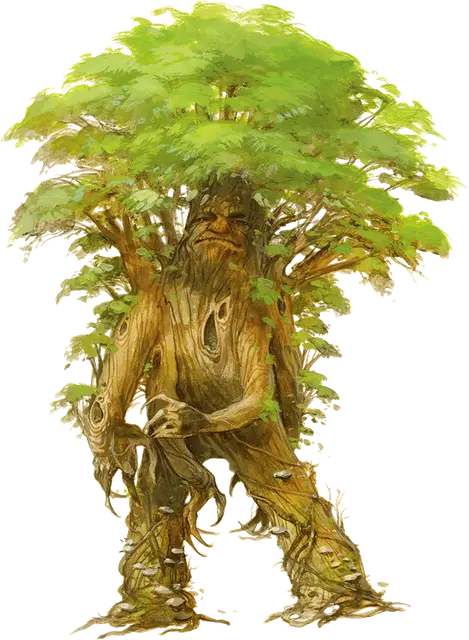

Трент
Treant
Огромное Растение, хаотично-доброе

Класс Доспеха 16 (природный доспех)
Хиты 138 (12к12 + 60)
Скорость 30 футов
| мод | спас | ||
|---|---|---|---|
| СИЛ | 23 | +6 | +6 |
| ЛОВ | 8 | −1 | −1 |
| ТЕЛ | 21 | +5 | +5 |
| мод | спас | ||
|---|---|---|---|
| ИНТ | 12 | +1 | +1 |
| МДР | 16 | +3 | +3 |
| ХАР | 12 | +1 | +1 |
Уязвимость к урону огонь
Сопротивление урону дробящий, колющий
Чувства пассивное Восприятие 13
Языки Общий, Друидический, Сильван, Эльфийский
Опасность 9 (5000 опыта)
Бонус мастерства +4
Среда обитания Лес
Особенности
Обманчивая внешность. Пока трент остается без движения, он неотличим от обычного дерева.
Осадное чудовище. Трент причиняет двойной урон предметам и строениям.
Действия
Мультиатака. Трент совершает два размашистых удара.
Размашистый удар. Рукопашная атака оружием: +10 к попаданию, досягаемость 5 футов, одна цель. Попадание: Дробящий урон 16 (3к6 + 6).
Камень. Дальнобойная атака оружием: +10 к попаданию, дистанция 60/180 футов, одна цель. Попадание: Дробящий урон 28 (4к10 + 6).
Оживление деревьев (1/день). Трент магическим образом оживляет до двух деревьев, которые видит в пределах 60 футов от себя. Деревья обладают статистикой трента, за исключением того, что у них Интеллект 1 и Харизма 1, они не могут говорить, и у них только один вариант действия — Размашистый удар. Оживленные деревья действуют как союзники трента. Дерево перестает быть живым через 1 день, когда умирает, когда трент умирает или отдаляется от него более чем на 120 футов, а также когда трент бонусным действием снова делает его неживым. Став снова неживым, дерево, при возможности, пускает корни.
Описание
Тренты — пробудившиеся деревья, живущие в древних лесах. Они предпочитают проводить дни, недели и годы в тихих раздумьях, но яростно обороняют свои лесные владения от внешних угроз.
Спящее дерево пробуждается. Дерево, которому суждено стать трентом, в течение многих сезонов находится в медитативном состоянии, живя десятки или даже сотни лет, и лишь потом осознавая свой потенциал. Деревья пробуждаются только при особых обстоятельствах, и только в насыщенных природной магией местах. Тренты и могущественные друиды чувствуют, когда у дерева есть искра потенциала для пробуждения, и защищают такие деревья в потаенных рощах, пока момент пробуждения не наступит. В течение длительного процесса пробуждения на коре дерева проступают черты лица, нижняя часть ствола раздваивается, формируя ноги, а длинные ветви сгибаются вниз, становясь руками. Когда дерево готово, оно высвобождает свои ноги из земли и присоединяется к товарищам в охране своего лесного дома.
Легендарные стражи. После пробуждения трент продолжает расти точно так же, как когда он был обычным деревом. Пробудившиеся из самых крупных деревьев тренты могут достигать неимоверных размеров и развивать внутренние магические способности по управлению растениями и животными. Такие тренты могут оживлять растения, используя их как ловушки и силки против незваных гостей. Они могут призывать диких животных как помощников, или чтобы те переносили сообщения на дальние расстояния.
Защитники дикой природы. Даже после пробуждения тренты проводят значительную часть времени как обычные деревья. Укоренившийся в одном месте трент по-прежнему остается в курсе того, что его окружает, и может воспринимать эффекты происходящих на расстоянии многих миль от него событий, исходя из незначительных изменений окружающей трента местности.
Дровосеки, которые стараются не рубить здоровые живые деревья, и охотники, получающие от леса только необходимое, вряд ли вызовут гнев трента. А вот беспечно обращающиеся с огнём существа, те, кто отравляют лес, и кто уничтожает большие деревья, особенно если те близки к пробуждению, почувствуют на себе ярость трента.